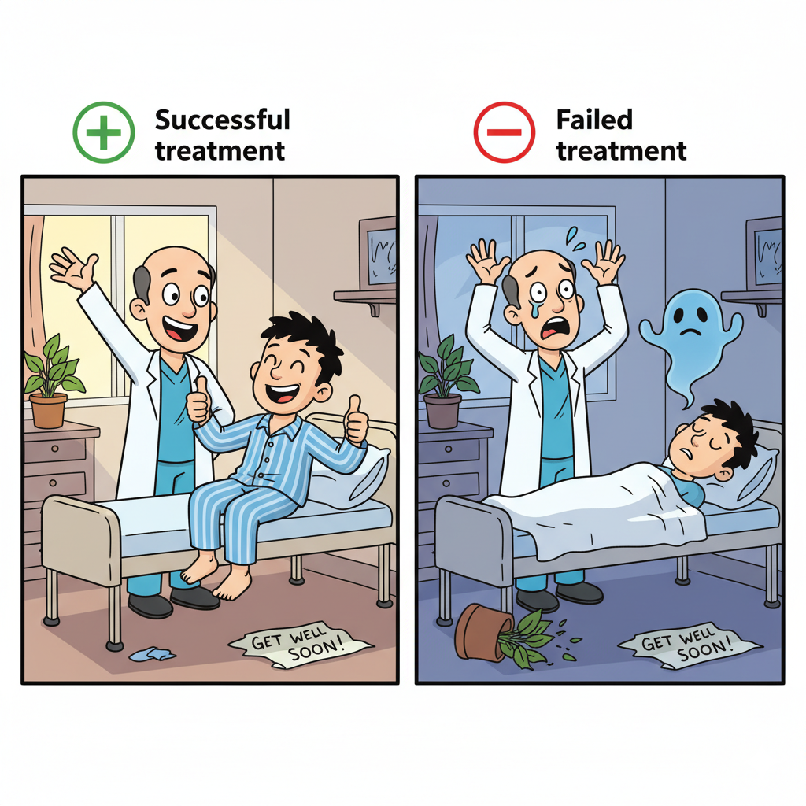

World states
Let the (unknown) world state be one of:
- \(\phi_1\): old treatment is better
- \(\phi_2\): new treatment is better
State space:
\[
\Phi = \{\phi_1,\phi_2\}.
\]
Actions
\[
\mathcal{A}=\{A_1,A_2\}.
\]
- \(A_1\): do nothing / keep old (no informative data is generated)
- \(A_2\): use new (may generate an informative result)
Results (only if taking \(A_2\))
If an agent takes \(A_2\), the experiment may produce one of two results:
\[
\{+,-\}.
\]
Likelihood model:
\[
\Pr(+\mid \phi_2)=0.6,\quad \Pr(-\mid \phi_2)=0.4
\]
\[
\Pr(+\mid \phi_1)=0.4,\quad \Pr(-\mid \phi_1)=0.6
\]
Interpretation: if the new treatment is truly better (\(\phi_2\)), a positive result is more likely.

Positive and negative outcomes when taking A2.
Beliefs
Each agent \(i\) maintains a belief that the new treatment is better:
\[
p_i = \Pr(\phi_2).
\]
Decision rule (myopic threshold)
At each round, agent \(i\) chooses:
- choose \(A_2\) if \(p_i > 0.5\)
- choose \(A_1\) otherwise
Loop (one round)
- Choose action \(A_1\) or \(A_2\).
- If \(A_2\), observe a result in \(\{+,-\}\).
- Update beliefs for self (and possibly after hearing others' results).